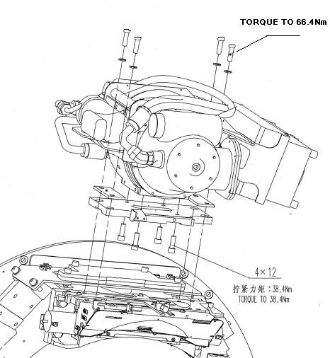
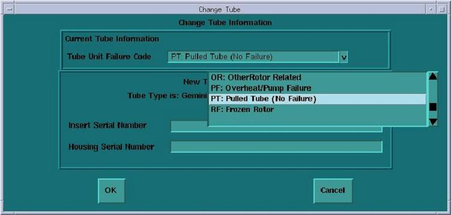
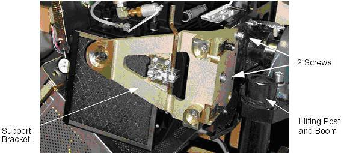
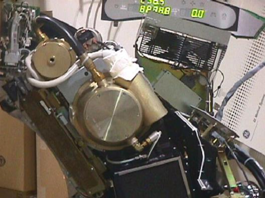
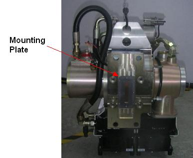
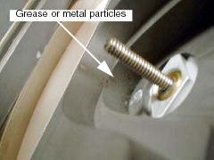
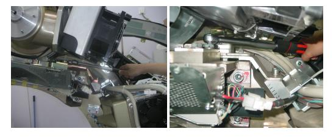
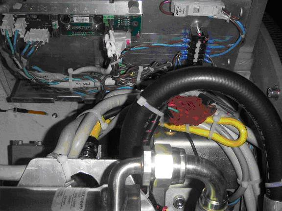

Operating Documentation
Direction 5181178-800, Rev# 16
BrightSpeed Select Service Methods Gen
Module Version 3.0, Version Date 2/7/12
Operating Documentation |
| Required Persons | Preliminary Reqs | Procedure | Finalization |
|---|---|---|---|
| 1 | Not Applicable | 1 hour | 7 hours |
| Last Revised: | Dec 2009 |
Illustration 1: Tube Removal Diagram

| Item | Qty | Effectivity | Part# | Manufacturer | |
|---|---|---|---|---|---|
| Torque wrench set | 1 | - | 3/8 inch drive torque wrench and torque wrench tip 5263871 | - | |
| Tube hoist and boom | 1 | - | - | - | |
| HV Bleeder Kit | 1 | - | - | - | |
| Item | Qty | Effectivity | Part# | Manufacturer |
|---|---|---|---|---|
| Tube oil | AR | - | - | - |
| Dry Wipes or Paper Towel | AR | - | - | - |
| Item | Qty | Effectivity | Part# | Manufacturer | |
|---|---|---|---|---|---|
| Tube | 1 | - | - | - | |
| ||||
| Potential for electric shock. | ||||
| Lethal Voltages may be present in the Gantry. | ||||
| Follow proper Electrical Lock-out/Tag-out procedures. |
| ||||
| Potential for personal injury (Pinch, crush, entanglement or impact injuries are possible). | ||||
| Gantry has rotating assembly. | ||||
| Use the Gantry’s Rotational Lock, to prevent uncommanded motion of the Gantry’s rotating assembly. |
| ||||
| Potential HV Cable Damage. Do not sharply bend HV cables, or damage the cables. The minimum allowed radius of bent HV cables is 6.35 cm (2.5 in.). | ||||
| ||||
| Follow ALL required safety and PPE procedures customary for your organization, when working on this product. | ||||
| Condition | Reference | Effectivity |
|---|---|---|
Only trained service personnel should service the GE CT Scanner. | - | - |
Information of torque wrench tip 5263871:
| Manufacturer | MFG model |
| Proto | 4918M Metric Crowfoot Wrench, 18 mm |
| NOTE: | Make sure to mount this torque wrench tip (shipped with system in shipping collector) on 3/8 inch drive torque wrench (prepared by service engineer) with 90 degree: |
Illustration 2: Torque Wrench Tip

| NOTE: | The following procedure is required prior to the actual tube replacement. If you perform the data entry after tube replacement, the system will set the tube heat data to the maximum, and you will have to wait for a pretty long time until the tube heat data lowers. |
Open [SERVICE DESKTOP].
Enter the data of the new tube:
Select [REPLACEMENT].
| NOTE: | Perform Tube Installation Certification, if required. Refer to SmarTube™ Setup. |
Select [TUBE CHANGE].
Select [NEWTUBE CONFIG], select a proper Tube Unit Failure Code (reason for tube replacement), Insert Serial #, and Housing Serial # of a new tube, then click on OK.
Illustration 3: Change Tube Information Screen

| ||||
| Electrocution hazard | ||||
| High Voltages present. | ||||
| Use proper lockout/tagout procedures before replacing components. See safety menu of Service Document gui for appropriate procedures. |
| ||||
| CRUSH HAZARD. | ||||
| UNEXPECTED GANTRY ROTATION CAN CAUSE SERIOUS INJURY. | ||||
| Use the gantry rotation lock to lock out gantry rotation. See safety menu of Service Document gui for appropriate procedures. |
Remove and set aside gantry side, top and front covers.
Remove the M12 screws holding support bracket for the right front gantry cover and set the assembly aside. It may be necessary to tilt the gantry back to remove the third bolt (not normally installed).
Illustration 4: Right Front Gantry Cover Support Bracket

| ||||
| If the gantry must be tilted, remember to tilt the gantry back to zero degrees. | ||||
Turn off the AXIAL DRIVE ENABLE, HVDC ENABLE, and 120VAC switches.
Turn off facility power to PDU and lockout/tagout according to lockout/tagout procedure.
Rotate the Gantry until the x-ray tube reaches the 2 o’clock position.
Remove the two tube mounting bolts and washers which are located at right side of tube (from front side of gantry). Continue to rotate the gantry unti the x-ray tube reaches about 3 o’clock position.
Illustration 5: Tube Angle to Loosen and Torque M12 Screws

| ||||
| Crush Point. | ||||
| If the gantry is not securely locked, upon removal of the X-Ray tube, the gantry will violently rotate due to weight imbalance. | ||||
| Ensure the gantry is securely locked by attempting to rotate the gantry by hand. |
| ||||
| Make sure the tube is at 90 degrees so the tube hangs at the correct engagement angle for removal and installation. | ||||
Engage gantry rotational lock, and check that the gantry is securely locked by attempting to rotate the gantry by hand.
| ||||
| severe injury possible. | ||||
| if the hoist hook's lock nut is loose, then the x-ray tube might drop from the hoist, with the resulting in serious injury to service personnel. | ||||
| before using the hoist, check to make certain that the hook's lock nut is not loose. If it is loose, do not use the hoist. instead, order a new hoist. |
Insert the lifting post, boom and chain hoist.
Disconnect the 12 pin tube I.D. system cable, from the top of the tube unit.
Disconnect the 4 pin mate-n-lock pump and fan power system cable.
Remove the anode and the cathode cable:
Carefully cut tie-wraps securing HV cables. Note HV cable routing.
Loosen each cable’s locking ring with the spanner wrench.
Pull each cable terminal out of its receptacle.
Ground the end of the cables to the Gantry frame.
Wipe up any oil that drips from the cable terminal.
Use paper towels to soak up any oil in the wells.
| ||||
| Crush Hazard. | ||||
| Remove the mounting bars in the following (lower/upper) order to lessen the risk of injury to your hand. Keep one hand under the bolt and pressure plate while unfastening it. This is to prevent them from falling into the fan that is attached to the tube. |
Remove the other 2 mounting bolts and washers.
Carefully swing the tube clear of the gantry.
| NOTE: | Be careful not to damage the fragile copper filter or lead shield in the mounting plate for the next step. |
| ||||
| Severe Injury Possible. | ||||
| Tube can separate from gantry. | ||||
| DO NOT REMOVE FACTORY INSTALLED MOUNTING PLATE. |
If the replacement tube has a mounting plate attached (see Illustration 6), DO NOT REMOVE IT. Skip Step 15 and Step 16.
Illustration 6: Tube Shipped with Mounting Plate Attached

| ||||
| Potential for IQ Artifacts. When removing the mounting plate from the tube, be careful with the Copper Filter. It should be free of debris, scratches and dust. Particles create artifacts in the image by affecting the attenuation properties of the copper filter. | ||||
If the replacement tube does NOT have a mounting plate attached, remove the mounting plate by removing the four M10 x 18 hex head screws.
If new tube has no mounting plate attached, inspect the copper filter. The copper filter should be clean, dent and scratch free:
If contamination is visible (see Illustration 7), proceed to Collimator Cleaning Procedure.
Discoloration is acceptable.
Illustration 7: Extremely Contaminated Copper Filter
| NOTE: | Perform the following inspection before installing the
new tube unit. Also look at the tube side of the copper filter when
you are swapping the interposer plate. The following tools are required for this inspection procedure:
|
Inspect the Bowtie Filter. It is possible that the Bowtie Filter is contaminated and the Primary Copper Filter is not contaminated.
Remove the Collimator Control Board Sheet Metal Cover. See Illustration 8.
Illustration 8: Collimator Control Board Cover
| ||||
| Potential for shock. | ||||
| Voltage is present. | ||||
| Do not attempt to move the filter with power on. |
| ||||
| Do not force the filter if it feels stuck. Damage to the limit
switch can result. Do not move the filter more than necessary for inspection. The filter can fall off the drive screw. | ||||
With power removed from the gantry, use a flat blade screwdriver and position the bowtie filter assembly so it is visible through the input port or tube side of the collimator assembly.
CCW will move the filter into the beam. See Illustration 9.
Do not move the filter back to the home position.
Illustration 9: Filter Position Adjuster

Using a flashlight, inspect the bowtie filter for contamination. Reference Illustration 10.
Look through the input port or tube side of the collimator.
If contamination is visible, proceed to Collimator Cleaning Procedure.
Illustration 10: Contaminated Bowtie Filter

| ||||
| CRUSH HAZARD. | ||||
| UNEXPECTED GANTRY ROTATION CAN CAUSE SERIOUS INJURY. | ||||
| Never service the gantry with the axial drive enabled. Use the gantry rotation lock to lock out gantry rotation. See safety menu of Service Document gui for appropriate procedures. |
| ||||
| Electrocution hazard. | ||||
| High Voltages present. | ||||
| Use proper lockout/tagout procedures before replacing components. See safety menu of Service Document gui for appropriate procedures. |
| ||||
| Severe Injury Possible. | ||||
| Tube can separate from gantry, if not torqued correctly. | ||||
| Always use proper torque on all fasteners. |
Allow the tube unit to warm to room temperature before you install it.
| ||||
| Severe Injury Possible. | ||||
| Tube can separate from gantry. | ||||
| Do not remove factory installed mounting plate. |
If the new tube has a factory installed mounting plate, DO NOT REMOVE IT. Skip to Step 4.
| ||||
| Severe Injury Possible. | ||||
| If you turn the torque wrench more than 90º (1/4 turn) while applying final torque, the mounting threads are stripped. | ||||
| Do not use this tube. |
Attach the mounting plate from the old tube using new M10 x 18mm bolts provided with the tube. Do NOT use Loctite.
Finger tighten all four (4) bolts
Torque all four (4) bolts to the following specification:
| 15 ft-lbs | 20 N-m | 180 in-lbs | 210 kg-cm |
This seats each bolt, enabling you to visually ensure that the mounting holes are not stripped while applying final torque.
Apply final torque on all four bolts:
| 28.8 ft-lbs | 38.4 N-m | 339.9 in-lbs | 391.6 kg-cm |
| ||||
| Potential for IQ artifacts. When attaching the mounting plate on the tube, be careful with the Copper Filter. It should be free of debris, scratches and dust. Particles create artifacts in the image. Use a lint free wipe to clean, if needed. | ||||
Re-check facility power and make sure it is off.
| ||||
| Severe injury to patient could occur. | ||||
| Using the wrong bolts could place stress on bolts, causing tube to separate from gantry. | ||||
| Use proper bolts. |
Use the hoist to lift the new tube unit:
Position the tube on the gantry: The “crosses” on the mounting plate and on the collimator should fit in perfectly when the tube is aligned properly.
| NOTE: |
|
Fasten the mounting plates to the rotating structure with the two mounting bolts which are located at the upper position of tube, and set pre-load torque to:
| 25 ft.-lbs | 33 N-m | 295 in-lbs | 340 kg-cm |
Loosen the gantry rotation lock, and rotate the tube to about 2 o’clock position, then Engage gantry rotational lock again.
Fasten the mounting plate to rotation structure with another two mounting bolts which are located at the lower position of tube, and set pre-load torque to:
| 25 ft.-lbs | 33 N-m | 295 in-lbs | 340 kg-cm |
Set final torque to all four bolts to:
| 49 ft.-lbs | 66 N-m | 590 in-lbs | 680 kg-cm |
Illustration 11: Tube and Mounting Plate

Attach the tube I.D. cable to the 12 pin mate-N-Lock connector on top of the tube.
Attach the tube pump and fan power cable to the 4 pin mate-N-Lock connector.
Remove the plastic cap plug from each cable receptacle on the tube unit.
| NOTE: | Take care not to lose the rubber quad rings for the High Voltage cables. |
Lightly wet the new rubber quad ring with transformer oil (917).
Return the quad ring to its slot at the top of the receptacle retaining ring.
Pour transformer oil (917) into the receptacle to a depth of 10 mm (0.375 in).
| ||||
| Incorrectly routed or secured HV cables will result in damage to the HV cables and/or other parts of the gantry. | ||||
Be sure to route the HV cable as shown in Illustration 12.
Illustration 12: HV Cables Properly Routed and Secured

Align the cable terminal orienting key with the notch in the receptacle.
| ||||
| Do not over tighten the locking ring. Over tightening can deform the cable plug sealing surfaces, break the oil seal between receptacle and housing, twist the receptacle, and disrupt internal wiring. | ||||
Slowly insert the cable, to engage the connector pins, and seat the cable in the well.
Tighten the cable locking ring.
Rotate the cable strain relief for a clean cable dress.
| ||||
| IF YOU GET OIL ON YOUR HANDS, WASH THEM NOW. | ||||
Carefully wipe up all excess oil.
Secure HV Cables using large tie-wraps, as shown in Illustration 12.
Disconnect hoist from tube and boom.
Remove the post and boom from the gantry. Reference Illustration 4.
Check for oil leaks:
Wrap rags or paper towels around the cable horns, and tape them into place.
Manually rotate the tube to the 6 o’clock position.
Return the tube to the 3 o’clock position
Remove the toweling and wipe up all excess oil.
Wipe off the cable horns, locking rings and strain reliefs with an alcohol-dampened rag.
Repeat with a dry rag.
Wrap the cable strain reliefs and locking rings with a single layer of absorbent paper tissue. You can use two inch wide strips cut from a paper napkin.
Wrap the bottom edge of the paper around the top end of the cable horn, and tape it in place.
Extend the top edge of the paper over the top of the locking ring, and tape it to the plastic cable strain relief.
Remove paper after leak check.
If oils leaks are found, tighten the locking ring slowly until there is no leakage, paying attention to not over tighten.
Install the right gantry front cover bracket. Reference Illustration 4.
Restore system power at the main disconnect panel.
Turn on gantry 120 VAC, HVDC ENABLE and AXIAL DRIVE ENABLE on the service switch panel. Wait at least 10 minutes to warm up the filament.
Reset the system:
New mounting bolts and washers are used for mounting the tube; old mounting bolts and washers are discarded.
Proper torque specifications are followed for all fasteners (see Torque Wrench Information)..
Tie-wraps and cables are in place.
Checklist
New mounting bolts and washers are used for mounting the tube; old mounting bolts and washers are discarded.
Proper torque specifications are followed for all fasteners (see Torque Wrench Information.
Tie-wraps and cables are in place.
Perform Tube Installation Certification, Refer to SmarTube™ Setup.
Perform the retest steps below in the order described.
Install TubeInstallFlex option through eLicense, as needed. Refer to Tube Identification (Tube Alignment Workflow)
Tube Usage Information is found on the Common Service Desktop following path:
Error Logs>Tube Usage>Details.
Z-Slope
Detailed Cals
N Number Check
Save System State